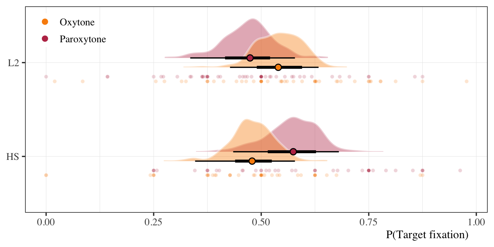
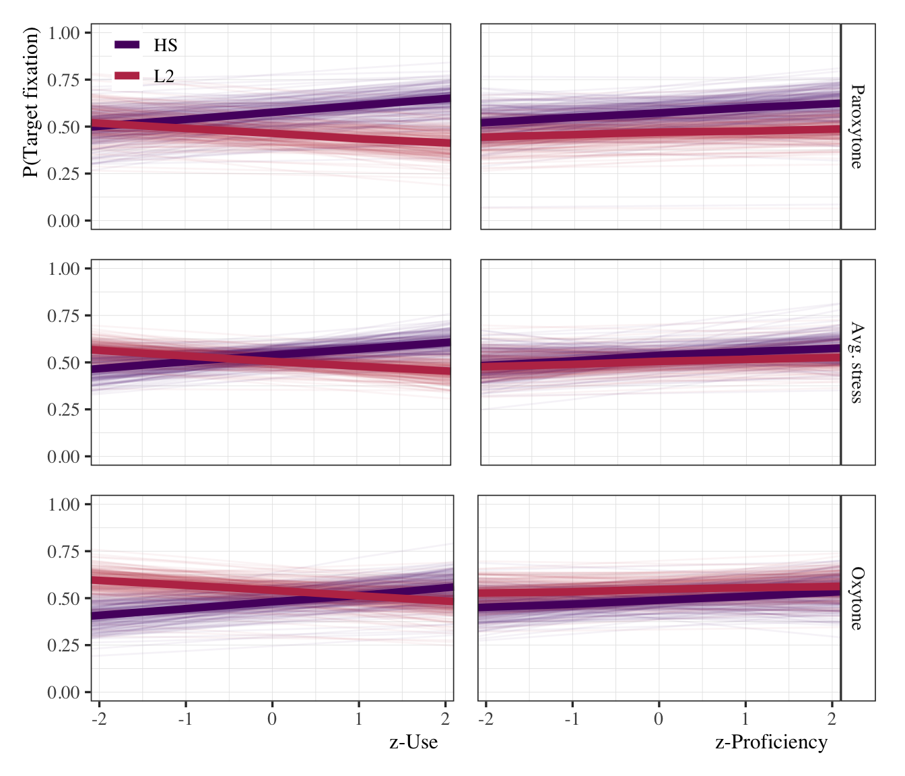
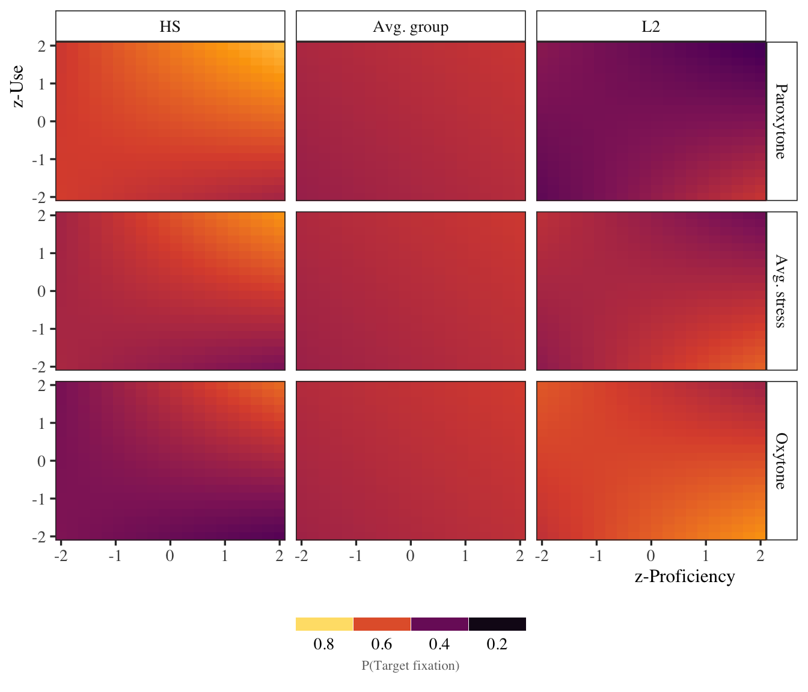

Code
# Load libraries and helpers
source(here::here("scripts", "00_libraries.R"))
source(here::here("scripts", "01_helpers.R"))
source(here::here("scripts", "04_load_data.R"))Beta regression
Load everything we need for the analyses.
# Load libraries and helpers
source(here::here("scripts", "00_libraries.R"))
source(here::here("scripts", "01_helpers.R"))
source(here::here("scripts", "04_load_data.R"))# Create subset of data at target syllable offset (time_zero == 4)
# and calculate mean/se of target fixations for each group in each
# stress condition
bi_4_prop <- stress_50 %>%
filter(group != "Monolingual",
time_zero == 4) %>%
group_by(id, group, stress, use_z, prof_z) %>%
summarize(avg = mean(target_prop), se = std_err(target_prop),
test_max = avg + se, .groups = "drop") %>%
mutate(group_sum = if_else(group == "HL", -1, 1),
stress_sum = if_else(stress == "Paroxytone", -1, 1))# Model formula
beta_reg_formula <- bf(
family = zero_inflated_beta(
link = "logit",
link_phi = "log",
link_zi = "logit"
),
avg ~ 1 +
group_sum + stress_sum + use_z + prof_z +
group_sum:stress_sum +
group_sum:use_z + group_sum:prof_z +
group_sum:use_z:prof_z +
(1 + stress_sum | id),
phi ~ 1 + (1 + stress_sum | id),
zi ~ 1 + (1 + stress_sum| id)
)
# Get model default priors
get_prior(
formula = beta_reg_formula,
data = bi_4_prop
) %>%
as_tibble() %>%
select(prior, class, coef) %>%
knitr::kable(format = "pandoc")| prior | class | coef |
|---|---|---|
| b | ||
| b | group_sum | |
| b | group_sum:prof_z | |
| b | group_sum:stress_sum | |
| b | group_sum:use_z | |
| b | group_sum:use_z:prof_z | |
| b | prof_z | |
| b | stress_sum | |
| b | use_z | |
| lkj(1) | cor | |
| cor | ||
| student_t(3, 0, 2.5) | Intercept | |
| student_t(3, 0, 2.5) | sd | |
| sd | ||
| sd | Intercept | |
| sd | stress_sum | |
| student_t(3, 0, 2.5) | Intercept | |
| student_t(3, 0, 2.5) | sd | |
| sd | ||
| sd | Intercept | |
| sd | stress_sum | |
| logistic(0, 1) | Intercept | |
| student_t(3, 0, 2.5) | sd | |
| sd | ||
| sd | Intercept | |
| sd | stress_sum |
# Set priors
beta_reg_prior <- c(
prior(normal(0, 0.5), class = "Intercept"),
prior(normal(0, 0.5), class = "Intercept", dpar = "phi"),
prior(logistic(0, 1), class = "Intercept", dpar = "zi"),
prior(normal(0, 0.2), class = "b"),
prior(student_t(3, 0, 2.5), class = "sd"),
prior(lkj(1), class = "cor")
)
# Sample priors
beta_reg_prior_predictive_check <- brm(
formula = beta_reg_formula,
prior = beta_reg_prior,
data = bi_4_prop,
cores = 4, backend = "cmdstanr",
sample_prior = "only",
file = here("models", "beta_reg", "beta_reg_prior_predictive_check")
)
# Simulate from priors and plot
prior_pred_heatmap <- bi_4_prop %>%
expand(id = "new", group_sum, stress_sum,
prof_z = -2:2, use_z = -2:2) %>%
add_epred_draws(beta_reg_prior_predictive_check,
allow_new_levels = T, ndraws = 100) %>%
ggplot() +
aes(x = prof_z, y = use_z, fill = .epred) +
facet_grid(stress_sum ~ group_sum) +
geom_tile() +
scale_fill_viridis_c() +
coord_cartesian(expand = F)
# Fit model
beta_reg_group_stress <- brm(
formula = beta_reg_formula,
prior = beta_reg_prior,
data = bi_4_prop,
cores = 4, backend = "cmdstanr", threads = threading(2),
iter = 12000, warmup = 2000, thin = 10,
control = list(adapt_delta = 0.9999, max_treedepth = 15),
file = here("models", "beta_reg", "beta_reg_group_stress")
)bi_zoid_marignal_prep <- bi_4_prop %>%
expand(id = "new", group_sum = c(-1, 1), stress_sum = c(-1, 1),
prof_z = 0, use_z = 0) %>%
add_epred_draws(beta_reg_group_stress,
allow_new_levels = T,
re_formula = NULL,
sample_new_levels = "uncertainty",
ndraws = 200) %>%
mutate(group = if_else(group_sum == -1, "HL", "L2"),
stress = if_else(stress_sum == -1, "Paroxytone", "Oxytone")) %>%
ungroup()
if(F) {
bi_zoid_marignal_prep %>%
group_by(group, stress) %>%
median_qi(.epred) %>%
mutate_if(is.numeric, round, digit = 2) %>%
transmute(
Estimate = .epred, HDI = glue::glue("[{.lower}, {.upper}]"),
parameter = glue::glue("{group}_{stress}")) %>%
write_csv(here("tables", "tab_bi_zoid_marginals.csv"))
}
bi_zoid_marignal_prep %>%
ggplot() +
aes(x = .epred, y = group, fill = stress) +
geom_point(data = filter(bi_4_prop, stress == "Paroxytone"), aes(x = avg),
pch = 21, color = "white", position = position_nudge(y = -0.15),
alpha = 0.2) +
geom_point(data = filter(bi_4_prop, stress == "Oxytone"), aes(x = avg),
pch = 21, color = "white", position = position_nudge(y = -0.20),
alpha = 0.2) +
stat_halfeye(position = position_dodge(0.2), pch = 21,
slab_alpha = 0.4, slab_color = "white", show.legend = F) +
scale_fill_manual(name = NULL, values = my_colors[c(1, 2)]) +
labs(y = NULL, x = "P(Target fixation)") +
guides(fill = guide_legend(override.aes = list(alpha = 1, size = 3))) +
theme(legend.position = c(0.1, 0.9))
# plot
beta_reg_use_parox <- bi_4_prop %>%
expand(id = "new", group_sum, stress_sum = -1,
prof_z = 0, use_z = seq(-2.1, 2.1, length.out = 5)) %>%
add_epred_draws(beta_reg_group_stress,
allow_new_levels = T,
re_formula = NULL,
sample_new_levels = "uncertainty",
ndraws = 200) %>%
mutate(group = if_else(group_sum == -1, "HL", "L2")) %>%
ggplot() +
aes(x = use_z, y = .epred, color = group) +
geom_path(aes(group = interaction(group, .draw)), alpha = 0.05) +
stat_summary(fun = median, geom = "line", size = 2) +
scale_color_manual(name = NULL, values = my_colors[3:2]) +
coord_cartesian(ylim = c(-0.05, 1.05), xlim = c(-2.1, 2.1),
expand = F) +
labs(y = "P(Target fixation)", x = NULL) +
theme(legend.position = c(0.15, 0.85),
axis.ticks.x = element_blank(), axis.text.x = element_blank())
beta_reg_prof_parox <- bi_4_prop %>%
expand(id = "new", group_sum, stress_sum = -1,
prof_z = seq(-2.1, 2.1, length.out = 5), use_z = 0) %>%
add_epred_draws(beta_reg_group_stress,
allow_new_levels = T,
re_formula = NULL,
sample_new_levels = "uncertainty",
ndraws = 200) %>%
mutate(group = if_else(group_sum == -1, "HL", "L2"),
stress = "Paroxytone") %>%
ggplot() +
aes(x = prof_z, y = .epred, color = group) +
facet_grid(stress ~ .) +
geom_path(aes(group = interaction(group, .draw)), alpha = 0.05,
show.legend = F) +
stat_summary(fun = median, geom = "line", size = 2, show.legend = F) +
scale_color_manual(name = NULL, values = my_colors[3:2]) +
coord_cartesian(ylim = c(-0.05, 1.05), xlim = c(-2.1, 2.1),
expand = F) +
labs(y = NULL, x = NULL) +
theme(axis.ticks.y = element_blank(), axis.text.y = element_blank(),
axis.ticks.x = element_blank(), axis.text.x = element_blank())
beta_reg_use_avg <- bi_4_prop %>%
expand(id = "new", group_sum, stress_sum = 0,
prof_z = 0, use_z = seq(-2.1, 2.1, length.out = 5)) %>%
add_epred_draws(beta_reg_group_stress,
allow_new_levels = T,
re_formula = NULL,
sample_new_levels = "uncertainty",
ndraws = 200) %>%
mutate(group = if_else(group_sum == -1, "HL", "L2")) %>%
ggplot() +
aes(x = use_z, y = .epred, color = group) +
geom_path(aes(group = interaction(group, .draw)), alpha = 0.05,
show.legend = F) +
stat_summary(fun = median, geom = "line", size = 2, show.legend = F) +
scale_color_manual(name = NULL, values = my_colors[3:2]) +
coord_cartesian(ylim = c(-0.05, 1.05), xlim = c(-2.1, 2.1),
expand = F) +
labs(y = NULL, x = NULL) +
theme(axis.ticks.x = element_blank(), axis.text.x = element_blank())
beta_reg_prof_avg <- bi_4_prop %>%
expand(id = "new", group_sum, stress_sum = 0,
prof_z = seq(-2.1, 2.1, length.out = 5), use_z = 0) %>%
add_epred_draws(beta_reg_group_stress,
allow_new_levels = T,
re_formula = NULL,
sample_new_levels = "uncertainty",
ndraws = 200) %>%
mutate(group = if_else(group_sum == -1, "HL", "L2"),
stress = "Avg. stress") %>%
ggplot() +
aes(x = prof_z, y = .epred, color = group) +
facet_grid(stress ~ .) +
geom_path(aes(group = interaction(group, .draw)), alpha = 0.05,
show.legend = F) +
stat_summary(fun = median, geom = "line", size = 2, show.legend = F) +
scale_color_manual(name = NULL, values = my_colors[3:2]) +
coord_cartesian(ylim = c(-0.05, 1.05), xlim = c(-2.1, 2.1),
expand = F) +
labs(y = NULL, x = NULL) +
theme(legend.position = c(0.85, 0.85),
axis.ticks.y = element_blank(), axis.text.y = element_blank(),
axis.ticks.x = element_blank(), axis.text.x = element_blank())
beta_reg_use_ox <- bi_4_prop %>%
expand(id = "new", group_sum, stress_sum = 1,
prof_z = 0, use_z = seq(-2.1, 2.1, length.out = 5)) %>%
add_epred_draws(beta_reg_group_stress,
allow_new_levels = T,
re_formula = NULL,
sample_new_levels = "uncertainty",
ndraws = 200) %>%
mutate(group = if_else(group_sum == -1, "HL", "L2")) %>%
ggplot() +
aes(x = use_z, y = .epred, color = group) +
geom_path(aes(group = interaction(group, .draw)), alpha = 0.05,
show.legend = F) +
stat_summary(fun = median, geom = "line", size = 2, show.legend = F) +
scale_color_manual(name = NULL, values = my_colors[3:2]) +
coord_cartesian(ylim = c(-0.05, 1.05), xlim = c(-2.1, 2.1),
expand = F) +
labs(y = NULL, x = "z-Use")
beta_reg_prof_ox <- bi_4_prop %>%
expand(id = "new", group_sum, stress_sum = 1,
prof_z = seq(-2.1, 2.1, length.out = 5), use_z = 0) %>%
add_epred_draws(beta_reg_group_stress,
allow_new_levels = T,
re_formula = NULL,
sample_new_levels = "uncertainty",
ndraws = 200) %>%
mutate(group = if_else(group_sum == -1, "HL", "L2"),
stress = "Oxytone") %>%
ggplot() +
aes(x = prof_z, y = .epred, color = group) +
facet_grid(stress ~ .) +
geom_path(aes(group = interaction(group, .draw)), alpha = 0.05,
show.legend = F) +
stat_summary(fun = median, geom = "line", size = 2, show.legend = F) +
scale_color_manual(name = NULL, values = my_colors[3:2]) +
coord_cartesian(ylim = c(-0.05, 1.05), xlim = c(-2.1, 2.1),
expand = F) +
scale_y_continuous(position = "right") +
labs(y = NULL, x = "z-Proficiency") +
theme(legend.position = c(0.85, 0.85),
axis.ticks.y = element_blank(), axis.text.y = element_blank())
(beta_reg_use_parox + beta_reg_prof_parox) /
(beta_reg_use_avg + beta_reg_prof_avg) /
(beta_reg_use_ox + beta_reg_prof_ox)
if(F) {
# plot
bi_heat_map <- bi_4_prop %>%
expand(id = "new",
group_sum = c(-1, 0, 1),
stress_sum = c(-1, 0, 1),
prof_z = seq(-2, 2, length.out = 20),
use_z = seq(-2, 2, length.out = 20)) %>%
add_epred_draws(beta_reg_group_stress,
allow_new_levels = T,
re_formula = NA,
sample_new_levels = "uncertainty",
ndraws = 100
) %>%
write_csv(here("models", "beta_reg", "beta_reg_group_stress_post.csv"))
}
bi_heat_map <-
read_csv(here("models", "beta_reg", "beta_reg_group_stress_post.csv"))
bi_heat_map %>%
mutate(
group = case_when(
group_sum == -1 ~ "HL",
group_sum == 0 ~ "Avg. group",
TRUE ~ "L2"),
stress = case_when(
stress_sum == -1 ~ "Paroxytone",
stress_sum == 0 ~ "Avg. stress",
TRUE ~ "Oxytone"
),
stress = as.factor(stress),
stress = fct_relevel(stress, "Paroxytone", "Avg. stress"),
group = as.factor(group),
group = fct_relevel(group, "HL", "Avg. group")) %>%
ggplot() +
aes(x = prof_z, y = use_z, fill = .epred) +
facet_grid(stress ~ group) +
geom_tile() +
scale_fill_viridis_c(name = NULL, option = "B") +
coord_cartesian(expand = F) +
labs(y = "z-Use", x = "z-Proficiency") +
clean_guide("bottom", "P(Target fixation)")
# Get posterior and cleanup colnames and term names
beta_reg_tab_dat <- as_draws_df(beta_reg_group_stress) %>%
select(starts_with(c("b_", "sd_", "cor_id"))) %>%
pivot_longer(cols = everything()) %>%
mutate(type = case_when(
startsWith(name, "b_") ~ "Population-level",
startsWith(name, "sd_") ~ "Group-level",
startsWith(name, "cor_") ~ "Group-level"),
type = fct_relevel(type, "Population-level", "Group-level")) %>%
mutate(name = case_when(
name == "b_Intercept" ~ "Intercept",
name == "b_phi_Intercept" ~ "phi Intercept",
name == "b_zi_Intercept" ~ "zi Intercept",
name == "b_group_sum" ~ "Group",
name == "b_stress_sum" ~ "Stress",
name == "b_prof_z" ~ "Proficiency",
name == "b_use_z" ~ "Use",
name == "b_group_sum:stress_sum" ~ "Group:Stress",
name == "b_group_sum:use_z" ~ "Group:Use",
name == "b_group_sum:prof_z" ~ "Group:Proficiency",
name == "b_group_sum:use_z:prof_z" ~ "Group:Use:Proficiency",
name == "sd_id__Intercept" ~ "sd(Intercept)",
name == "sd_id__stress_sum" ~ "sd(Stress)",
name == "sd_id__phi_Intercept" ~ "sd(phi Intercept)",
name == "sd_id__phi_stress_sum" ~ "sd(phi Stress)",
name == "sd_id__zi_Intercept" ~ "sd(zi Intercept)",
name == "sd_id__zi_stress_sum" ~ "sd(zi Stress)",
name == "cor_id__Intercept__stress_sum" ~ "cor(Intercept, Stress)",
name == "cor_id__phi_Intercept__phi_stress_sum" ~ "cor(phi Intercept, phi Stress)",
name == "cor_id__zi_Intercept__zi_stress_sum" ~ "cor(zi Intercept, zi Stress)",
TRUE ~ name)
) %>%
mutate(name = fct_relevel(name,
"cor(zi Intercept, zi Stress)", "cor(phi Intercept, phi Stress)",
"cor(Intercept, Stress)", "sd(zi Stress)", "sd(zi Intercept)",
"sd(phi Stress)", "sd(phi Intercept)", "sd(Stress)", "sd(Intercept)",
"Group:Use:Proficiency", "Group:Proficiency", "Group:Use", "Group:Stress",
"Use", "Proficiency", "Stress", "Group", "zi Intercept",
"phi Intercept", "Intercept"))
# Summarize posterior for printing estimates in plot
beta_reg_summary <- group_by(beta_reg_tab_dat, name, type) %>%
mean_qi(value, .width = 0.95) %>%
mutate_if(is.numeric, specify_decimal, k = 2) %>%
mutate(label = glue::glue("{value} [{.lower}, {.upper}]"),
label = str_replace_all(label, "-", "\U2212"))
# Forest plot
beta_reg_tab_dat %>%
ggplot(., aes(x = value, y = name)) +
facet_grid(type ~ ., scales = "free", space = "free") +
geom_vline(xintercept = 0, lty = 3) +
stat_pointinterval(point_fill = "white", pch = 21, show.legend = F) +
geom_text(data = beta_reg_summary,
hjust = 1, family = "Times", size = 3.2,
aes(group = type, label = label, x = -1.05)) +
coord_cartesian(xlim = c(-1.9, 2.5)) +
scale_x_continuous(breaks = c(-2, -1, 0, 1, 2)) +
labs(y = NULL, x = "Estimate") +
theme(plot.margin = unit(x = c(0, 0, 0, 0), units = "mm"),
strip.placement = "outside", strip.background = element_blank(),
axis.text.y = element_text(hjust = 1), axis.ticks.y = element_blank())bi_zoid_tib <- beta_reg_tab_dat %>%
group_by(type, name) %>%
mutate(name = fct_rev(name)) %>%
summarize(.groups = "drop",
hdi = mean_qi(value),
rope = rope(value, range = c(-0.1, 0.1)),
PD = pd(value, null = 0)[1]) %>%
transmute(Effect = type, Term = name, Estimate = hdi$y,
lower = hdi$ymin, upper = hdi$ymax, ROPE = rope$ROPE_Percentage, PD) %>%
mutate_if(is.numeric, specify_decimal, k = 2) %>%
transmute(Effect, Term, Estimate,
HDI = glue::glue("[{lower}, {upper}]"), ROPE, PD,
parameter = Term) %>%
mutate(
Estimate = str_replace_all(Estimate, "-", "\U2212"),
HDI = str_replace_all(HDI, "-", "\U2212")
) %>%
write_csv(here("tables", "tab_bi_zoid_mod.csv"))
bi_zoid_tib %>%
select(-parameter) %>%
knitr::kable(format = "pandoc",
align = c("l", "l", "r", "r", "r", "r", "r"))| Effect | Term | Estimate | HDI | ROPE | PD |
|---|---|---|---|---|---|
| Population-level | Intercept | 0.11 | [0.01, 0.22] | 0.39 | 0.99 |
| Population-level | phi Intercept | 2.12 | [1.81, 2.47] | 0.00 | 1.00 |
| Population-level | zi Intercept | 4.80 | [7.33, 3.36] | 0.00 | 1.00 |
| Population-level | Group | 0.05 | [0.16, 0.05] | 0.83 | 0.83 |
| Population-level | Stress | 0.02 | [0.12, 0.08] | 0.97 | 0.63 |
| Population-level | Proficiency | 0.07 | [0.05, 0.19] | 0.69 | 0.87 |
| Population-level | Use | 0.02 | [0.09, 0.12] | 0.96 | 0.63 |
| Population-level | Group:Stress | 0.17 | [0.06, 0.27] | 0.08 | 1.00 |
| Population-level | Group:Use | 0.13 | [0.23, 0.02] | 0.30 | 0.99 |
| Population-level | Group:Proficiency | 0.03 | [0.15, 0.10] | 0.91 | 0.66 |
| Population-level | Group:Use:Proficiency | 0.03 | [0.15, 0.09] | 0.88 | 0.67 |
| Group-level | sd(Intercept) | 0.13 | [0.01, 0.32] | 0.42 | 1.00 |
| Group-level | sd(Stress) | 0.12 | [0.01, 0.31] | 0.45 | 1.00 |
| Group-level | sd(phi Intercept) | 0.64 | [0.22, 1.05] | 0.00 | 1.00 |
| Group-level | sd(phi Stress) | 0.33 | [0.02, 0.74] | 0.13 | 1.00 |
| Group-level | sd(zi Intercept) | 0.80 | [0.03, 2.46] | 0.06 | 1.00 |
| Group-level | sd(zi Stress) | 0.83 | [0.03, 2.55] | 0.05 | 1.00 |
| Group-level | cor(Intercept, Stress) | 0.19 | [0.97, 0.91] | 0.09 | 0.65 |
| Group-level | cor(phi Intercept, phi Stress) | 0.41 | [0.63, 0.97] | 0.09 | 0.82 |
| Group-level | cor(zi Intercept, zi Stress) | 0.11 | [0.90, 0.95] | 0.12 | 0.59 |